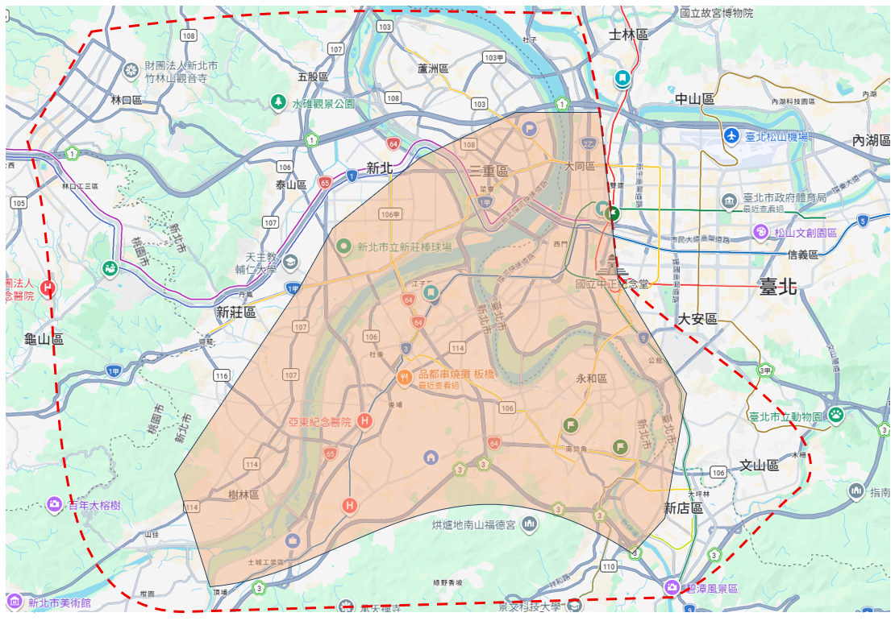

網球陪打 / 陪練
適合想增加來回穩定度、維持手感、練習比賽節奏，或希望有人固定配合對打與拉球的球友。
台北 / 新北 網球陪打
如果你剛入門、很久沒打、或只是想找個人穩定練球——我很樂意陪你。 陪打比教練課親民，又比一個人練更有節奏，適合預算有限、想多打幾顆球的球友。
個人照片待補 將照片存為 assets/hero-photo.jpg，取消上方 img 註解即可顯示
我能陪你做什麼
適合想增加來回穩定度、維持手感、練習比賽節奏，或希望有人固定配合對打與拉球的球友。
如果你剛接觸網球、怕對打壓力太大，或常常打不到球，我會用較適合初學者的節奏陪你練習，讓你先建立信心。
想練正拍、反拍、截擊、發球或步伐節奏，也可以安排餵球與基礎動作調整，在陪打中順便修正。
陪打風格
我的陪打方式不是單純把球打過去，而是會根據你的程度調整來球節奏、球速、落點與練習方式， 讓你可以在「打得到、接得住、能持續來回」的節奏下建立球感與信心。
如果你希望的不只是陪打，而是想順便調整基本動作，例如擊球距離、拍面控制、步伐啟動或來球判斷， 也可以在陪打中穿插這些練習，不用另外上教練課。
球友回饋
以下是陪打球友的簡短回饋，待你收集後可替換成真實內容。
「第一次找陪打有點緊張，但陪打節奏很耐心，不會嫌我慢，幾次下來已經可以穩定對拉了。」— 初學者球友（待替換為真實回饋）
打球影片
影片頁面已準備好，等你拍好練球片段後放上即可。
收費方式
NT$ 500
NT$ 600（較遠地區）
服務地區
主要服務台北市西區、南區，以及新北市三重以南、木柵以西的區域。
紅色虛線範圍因距離較遠，需酌收交通費，實際費用可事先討論。

台北市西區、南區 / 新北市三重以南、木柵以西
在主要範圍內，交通距離較近，無需額外收取交通費。
包含區域：中正區、萬華區、大同區、中山區（西側）、大安區（部分）、文山區（木柵以西）、新店區、永和區、中和區、板橋區、三重區（以南）、新莊區（部分）、土城區、樹林區、三峽區（部分）。
紅色虛線範圍內之延伸區域
因距離較遠，需酌收交通補貼費用，實際費用依距離與時間討論。
包含區域：林口區、五股區、蘆洲區、內湖區、南港區、士林區、三峽區（北側）、鶯歌區等。
歡迎先跟我聯絡，我會協助評估並提供建議。